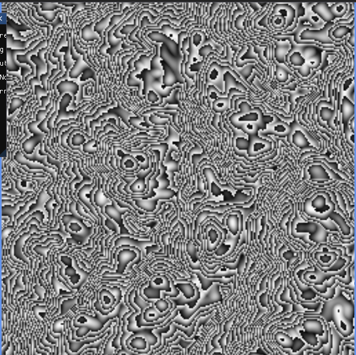

3D Graphics

This project implements a Gradient Noise procedural generation system using C++ and OpenGL. Unlike Value Noise, which interpolates random values, Gradient Noise interpolates between random gradients (vectors) assigned to integer lattice points, resulting in smoother and more organic patterns. The purpose of this project was to build a robust procedural noise generator and apply it in real-time to both 2D textures and 3D terrain displacement.
A significant challenge in this project was debugging a subtle shader attribute mapping issue. Initially, the procedural noise evaluated to a flat gray color because the vertex shader was mistakenly reading the mesh's normal vectors (which were all identical) instead of the UV coordinates. Identifying and resolving this required careful synchronization between the C++ MeshVertex layout and the GLSL layout(location) specifiers. Through this project, I gained a much deeper appreciation for the mathematical beauty of procedural generation. It was incredibly rewarding to see how layering a relatively simple noise function across multiple octaves could produce highly intricate and natural-looking materials like wood and marble.